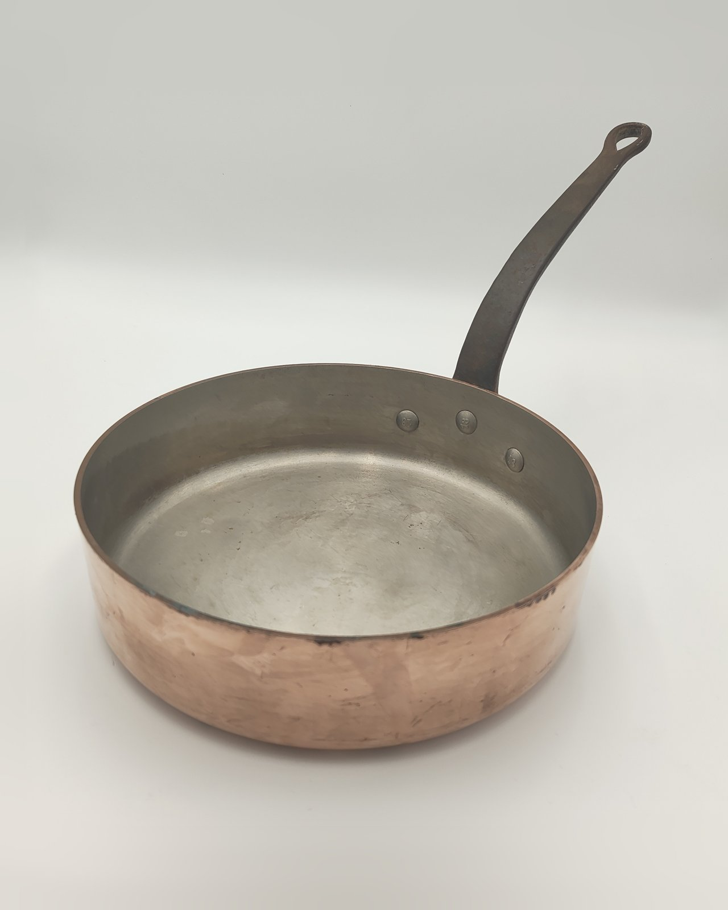
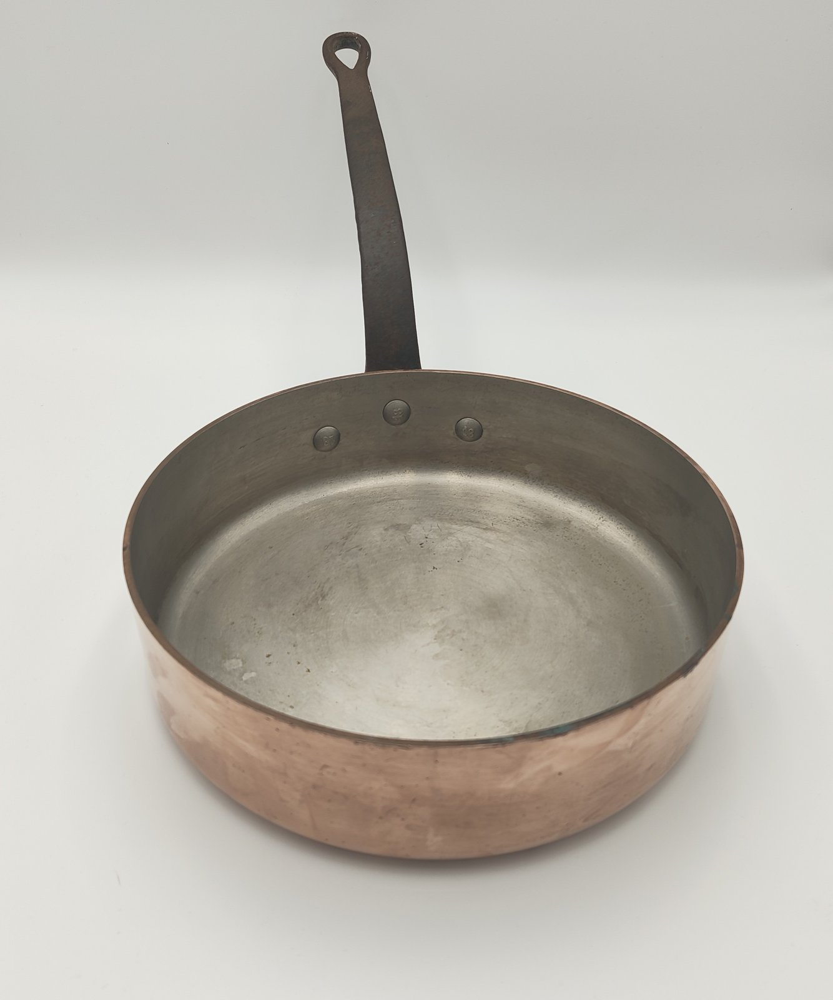
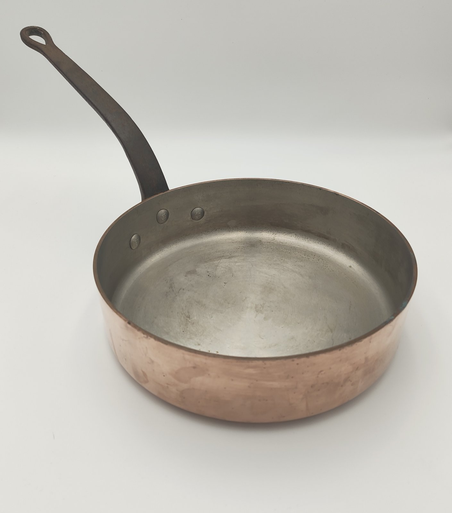
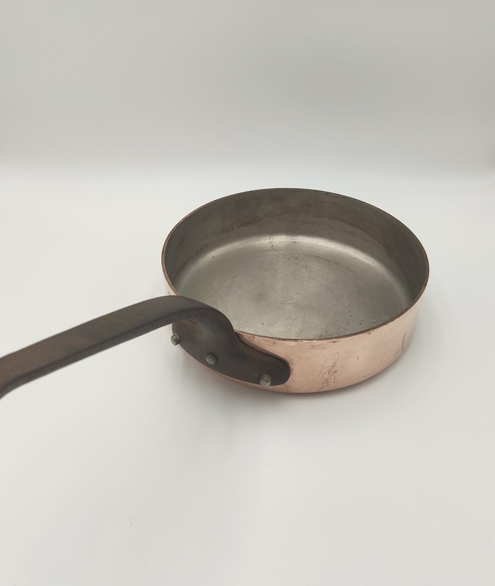
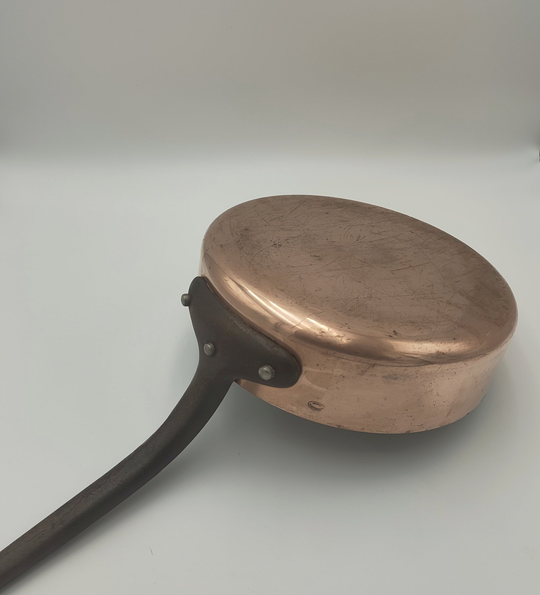
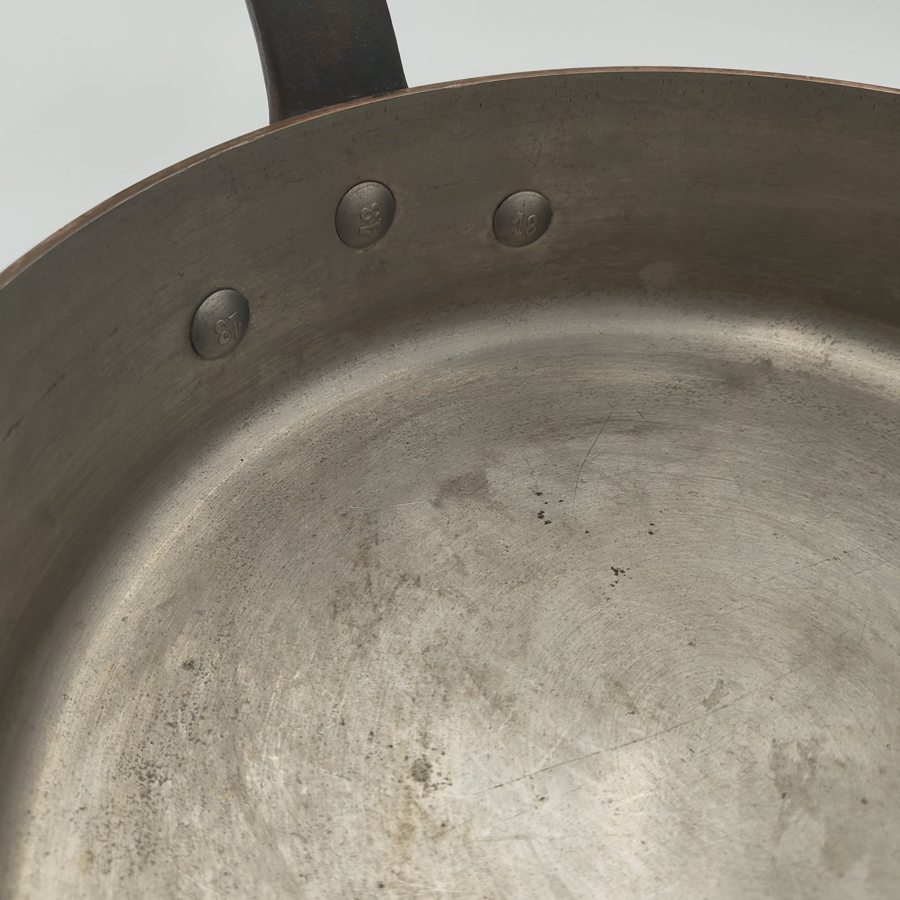
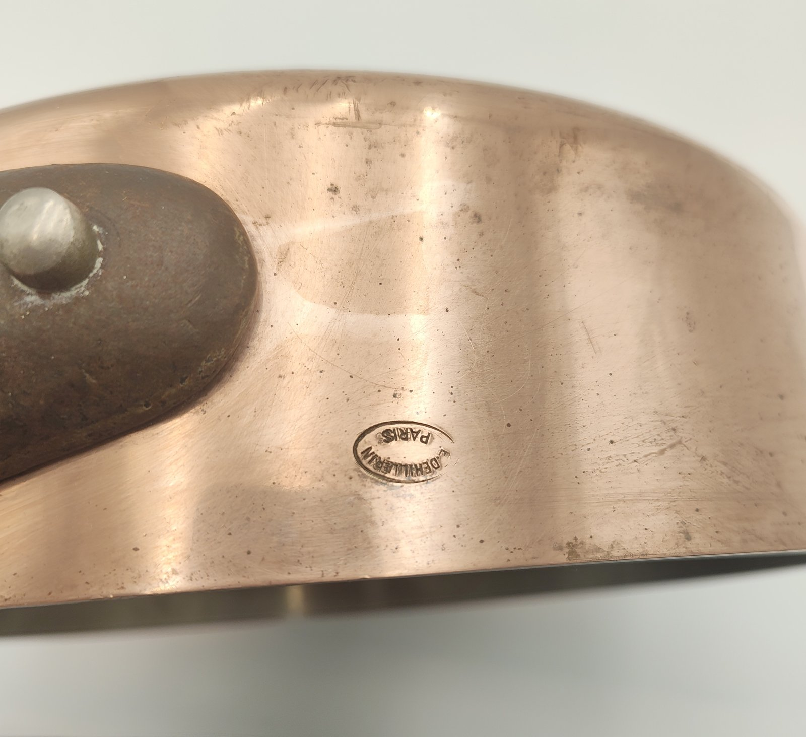
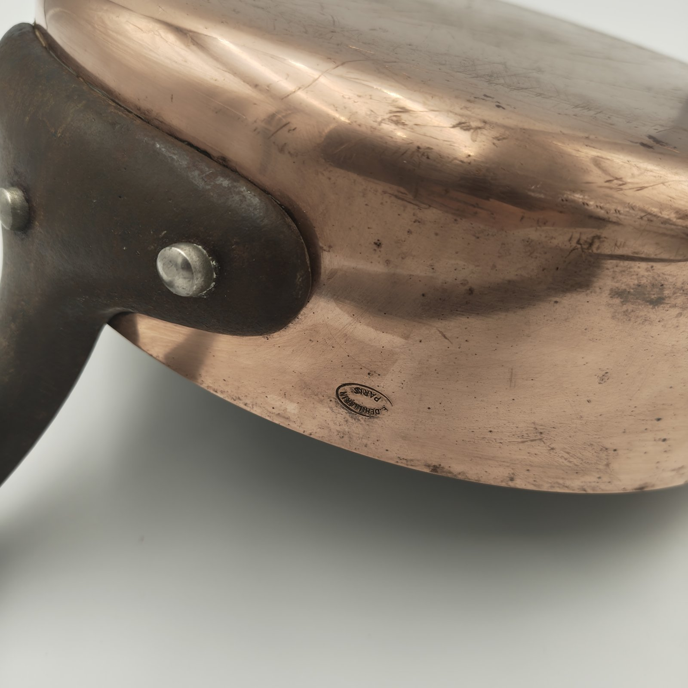
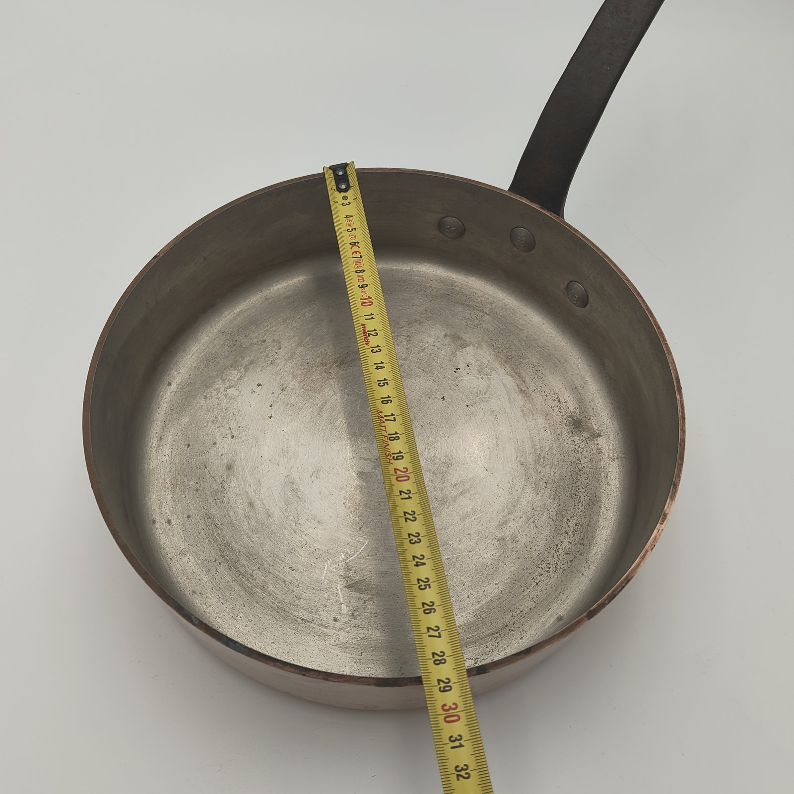
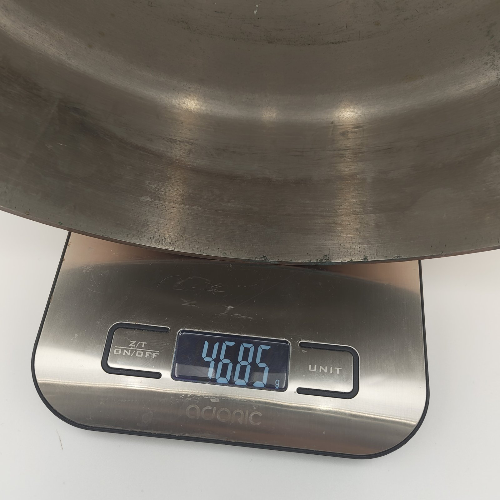

Available
E. Dehillerin Tinned Copper Sauté Pan, 29 cm, Paris, France
475€
Enquire to Purchase
Make an Offer
No online payment: we reply personally to confirm availability, shipping and payment.
A heavy professional sauté pan from E. Dehillerin, the Parisian house on rue Coquillière that has supplied restaurant kitchens since the nineteenth century and once ran its own boilermaking and tinning workshops. With a wall of approximately 3 mm and a weight of 4.685 kg, it is built for the thermal stability of a working kitchen — a massive iron handle fixed by three large rivets completing a pan made to be used, retinned and used again.
- Maker
- E. Dehillerin
- Origin
- Paris, France
- Materials
- Heavy-gauge copper (approx. 3 mm wall), tin lining, iron handle
- Dimensions
- Diameter approx. 29 cm; weight 4.685 kg
- Marks & signatures
- Oval 'E. DEHILLERIN / PARIS' stamp on the side; each of the three interior rivet heads stamped '18'
- Condition
- Good working condition. Original tin lining worn in places, as expected on a used piece, and ready to be retinned if desired; copper exterior with natural patina and light marks; handle firmly riveted (see photographs).
International shipping available — costs at buyer’s expense. See shipping & delivery information